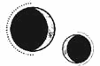

CAPÍTULO 64
Augustus 1787
Helena liberó a Sebastian de la reanimación y lo dejó escondido junto a Luc en el callejón.
Solo pensaba en Lila.
El aire estaba cargado de humo y sangre. El estruendo de la batalla retumbaba a su alrededor mientras avanzaba por la ciudad intentando pasar desapercibida. Sabía que no podría salvar a todo el mundo. De hecho, dudaba de que fuera capaz de poder salvar a nadie.
Debía encontrar a Lila.
Al llegar al último muro que marcaba el límite del territorio de la Resistencia, encontró a un grupo de necrómatas vigilándolo. Eran rostros conocidos. Entre ellos, estaba el comandante de la unidad de Luc. Tenía una herida enorme en la cabeza que le dejaba al descubierto parte del tejido cerebral.
Kaine le había explicado que nadie se molestaba en comprobar a quién pertenecía cada necrómata, pues se daba por sentado que todos formaban parte de un inmarcesible. Si seleccionaba a unos cuantos y les arrancaba la chispa que los reanimaba, podría hacer que la escoltaran hasta el Cuartel General como si fuera una prisionera. El problema era que estaban bien armados.
Necesitaba encontrar objetivos más fáciles, así que dio media vuelta y retomó la huida. Mientras buscaba una manera de regresar al Cuartel General, se escondió en varios edificios, subió y bajó viejas escaleras y escalerillas de evacuación. Los combatientes contaban con arneses para descolgarse por las calles y moverse por los distintos niveles de la ciudad con facilidad, pero ella tuvo que encontrar una ruta a pie.
Los necrómatas la seguían de cerca. Sabía que la estaban llevando adonde ellos querían, que la estaban acechando como una manada de depredadores. Los muertos no se cansaban, así que la suya era una batalla perdida.
Decidió esconderse tras un pilar medio cubierto de escombros para recuperar el aliento.
Oyó unos pasos que se acercaban y su corazón se aceleró. Se puso en pie de un salto con un jadeo y salió de su escondite a toda prisa, pero se topó de bruces con un inmarcesible completamente vestido de negro.
Antes de poder retroceder, una mano la sujetó con fuerza por la cabeza y Helena perdió el conocimiento.
Se despertó con un grito ahogado y encontró a Kaine, cernido sobre ella, tocándole la nuca. Helena se apartó con una sacudida. Su mirada recorrió la estancia, pero no reconocía el lugar. Le daba vueltas la cabeza.
—No pasa nada. Estás a salvo.
Ella lo miró confundida mientras intentaba recordar cómo había llegado hasta allí.
Los recuerdos regresaron de golpe. Luc. Luc estaba muerto.
Lo había matado ella.
Fue como recibir un puñetazo en la garganta.
—¿Qué… qué ha pasado?
Tenía la boca seca. Miró aturdida a su alrededor tratando de localizar dónde se encontraba. Kaine le apartó los dedos de la nuca, pero, aunque parecía calmado, en sus ojos se atisbaba una furia contenida.
—La guerra ha terminado. Los inmarcesibles se han hecho con el control de la ciudad, incluyendo el Cuartel General. Las facciones activas de la Resistencia que quedan están acorraladas. Si no se rinden, acabarán enterrados bajo los escombros antes de que caiga la noche.
Helena se incorporó, pero estaba demasiado mareada como para pensar con claridad. Había estado intentando llegar hasta Lila… ¿Y después? No recordaba nada más.
Kaine empezó a caminar de un lado al otro de la estancia.
—¿Cómo ha pasado esto? ¿A quién se le ocurriría repartirse por toda la ciudad y dejar el Cuartel General desprotegido? ¿Y dónde diablos está Holdfast?
La chica se estremeció.
—Está muerto.
Kaine se detuvo en seco y se volvió hacia ella.
—¿Qué quieres decir?
Helena se miró las manos, incapaz de distinguir la sangre de Luc de la suya propia en su ropa. No encontraba las palabras.
—¿Qué ha pasado? —insistió Kaine.
—Fue… —tragó saliva— un accidente.
Se lo contó todo: lo que había descubierto, la identidad de quien había reemplazado a Luc y todo lo que había sucedido con él en los últimos meses. Le contó que la había engañado, que ella había reaccionado sin pensar y que había llegado demasiado tarde.
—Intenté curarlo… —dijo con voz temblorosa—, pero era como si no quedase lo suficiente de él en su interior. Se estaba desmoronando y no pude… —Se le contrajo el pecho como si estuviera a punto de partírsele en dos—. Mi deber era salvarlo… —susurró. Se le cerró la garganta, se echó a temblar de pies a cabeza y ya no pudo seguir hablando. Kaine permaneció en silencio hasta que logró recomponerse—. Morrough debe de tener cientos de años. Paladia se fundó hace más de cinco siglos.
—¿Toda esta guerra se reduce a un conflicto entre hermanos que se pelean por decidir quién juega a ser dios? —Kaine dejó escapar una carcajada amarga—. Da igual qué puto bando escojamos, porque al final somos caras opuestas de una misma moneda.
Helena no dijo nada. Se aferró a las sábanas que la cubrían con tanta fuerza que se le pusieron los nudillos blancos. Tenía que levantarse, pero se sentía como un jarrón a punto de resquebrajarse.
—Hay que ir a buscar a Lila.
—La guerra ha terminado, Helena.
Ella se estremeció al oír la forma en que pronunció su nombre para decir aquello.
—Lo sé —dijo, presa de un ataque de sudores fríos y calientes al mismo tiempo—. No hace falta que me lo recuerdes. ¡Ya sé que hemos perdido! —Apretó los labios y se frotó los ojos con la base de las manos mientras intentaba controlarse. Continuó con voz aún temblorosa—: No estoy diciendo que no haya acabado. Pero ahora tenemos la obsidiana. Nosotros todavía podemos hacer algo. Si actuamos con precaución, tal vez tengamos la oportunidad de matar a los inmarcesibles y arrebatarle la vitalidad a Morrough.
—Ya no hay ningún «nosotros» —replicó Kaine—. Vas a marcharte de Paladia.
Helena levantó la vista de golpe. Él estaba de pie a su lado, con los brazos cruzados.
—Yo me encargaré de matarlos, pero tu trabajo aquí ha terminado. Holdfast ha muerto y la Llama Eterna está acabada. Debes marcharte.
—No me iré sin ti —dijo ella negando con la cabeza.
Kaine mantuvo una expresión imperturbable.
—Pero yo no quiero que te quedes. Me será más fácil trabajar si Morrough cree que la victoria ha sido aplastante.
Helena apretó los dientes.
—Está bien —concedió con cierta tirantez—. Te ayudaré desde la distancia al principio si crees que eso facilitará las cosas.
—Bien. —Kaine dio un paso atrás y giró sobre los talones—. Voy a prepararlo todo.
Helena lo miró cautelosa, sin saber si debía creerle o no. Por muy razonable que fuera la idea, sabía que Kaine llevaba un tiempo queriendo sacarla de Paladia y tampoco le quedaban más opciones. Tenía que llevar a Lila a un lugar seguro. Hasta entonces, Helena no tendría margen para negociar.
—Solo me marcharé si Lila viene conmigo.
Kaine dio un paso atrás.
—Ni hablar. Si desaparece, os darán caza por todo el continente. No merece la pena correr ese riesgo por ella.
Helena se puso de pie.
—No te estoy pidiendo permiso. Tengo que llevármela conmigo. No pienso marcharme sin ella. Le prometí a Luc que la cuidaría. Ha estado encerrada en lo alto de la Torre de Alquimia, en cuarentena. A lo mejor no la han encontrado todavía. Cuanto antes vayamos a por ella, más posibilidades tenemos de sacarla de allí sin ser descubiertos. Podríamos… podríamos buscar un cadáver y utilizar la vivemancia para hacer que se parezca a ella. Nadie se enterará de que se ha ido.
Algo cambió de pronto en Kaine: la tensión le crispó la boca.
—Llévame hasta allí fingiendo haberme hecho prisionera y úsame como excusa para entrar. Solo han pasado un par de horas…
—Helena…
Kaine pronunció su nombre despacio y en su voz se oyó la mezcla de una advertencia y una súplica. Dejó vagar la mirada por toda la estancia y se detuvo un instante en las cortinas. Helena se quedó muda, se levantó medio aturdida y se acercó a la ventana. Fuera no había luz.
Ya había anochecido.
Pero ¿cómo era posible? Cuando Luc había muerto estaba amaneciendo.
—¿Cuánto… cuánto tiempo me has tenido inconsciente? —Le temblaba la voz—. ¿C-cuánto tiempo ha pasado?
Kaine no respondió.
Helena se dio la vuelta y corrió hacia la puerta, pero él la detuvo, tirando de ella hacia atrás.
—Te lo puedo explicar…
Se debatió contra él forcejeando por liberarse.
—¿Qué has hecho? —preguntó subiendo la voz—. ¿Cuánto tiempo he estado inconsciente?
—Escúchame. —La sacudió con el rostro desencajado—. Después de que estallara la bomba, cuando la Resistencia atacó, Morrough nos ordenó a todos que esperáramos. Estaban al tanto de vuestros números, de la cantidad de combatientes que os quedaban. Era evidente que el Cuartel General quedaría desprotegido. Ya sabían que recibirían un ataque antes de la llegada de las fuerzas hevgotianas… Lo estaban esperando. Tenían a alguien infiltrado entre vuestras filas. Cuando llegué allí, ya no estabas. Nadie sabía qué había sido de ti. Dejé mi puesto para buscarte, así que tuve que regresar en cuanto te puse a salvo.
—Entonces… ¿cuánto me has tenido aquí? ¿Un día? —preguntó ella, con la voz rota, sintiéndose traicionada.
—He vuelto tan pronto como he podido.
Helena se echó a temblar, abrumada por la conmoción.
—Iba a ir a por Lila. Eso era lo que quería hacer, pero no dejaban de cortarme el paso… y… —Se estremeció—. Fuiste tú, ¿verdad? Me dejaste inconsciente. Ni siquiera…
Todos esos necrómatas pisándole los talones. Kaine había matado a esos soldados y los había colocado en posiciones estratégicas para mantenerla vigilada y esperarla. Tenía las manos demasiado manchadas de sangre.
Las mismas manos con las que Kaine le acariciaba el rostro.
—¿Qué esperabas que hiciera? ¿Que te dejara ir directa a la masacre? Nos ordenaron que matáramos a cualquiera que se resistiera.
—¿Están todos…? —Ni siquiera pudo acabar la pregunta. Ya no importaba—. No me marcharé de aquí sin Lila, así que puedes ayudarme o dejarme ir sola, pero no hay más que hablar.
Kaine permaneció impasible.
—Si quieres derrotar a Morrough, no podemos permitirnos rescatar a nadie.
—No habrá forma de acabar con él sin Lila. Está embarazada. Morrough necesita a otro Holdfast y Lila lleva en su seno al último descendiente con vida. Le prometí a Luc que la sacaría de allí. Fue lo último que le dije antes de que muriera. Era lo único que le importaba.
—A mí me da igual lo que quisiera Holdfast —dijo implacable.
No iba a dar su brazo a torcer, ni siquiera por ella.
Helena notó que se le apretaba el pecho y las costillas se le curvaban alrededor del corazón como una jaula.
«Siempre eres tú quien sale perdiendo. Todos tus seres queridos mueren».
—Porque, si me ayudas, lo dejaré… todo. Me marcharé y no volveré jamás. Haré lo que quieras si me ayudas a salvar a Lila Bayard. Haré lo que sea. Lo que me pidas. Te juro que lo haré. —Extendió la mano hacia él con dedos temblorosos—. Por favor.
Kaine se había quedado inmóvil.
—¿Me lo prometes?
Ella asintió.
—Sí… —se le entrecortó la voz—. Sí, te lo prometo.
Él la observó con la mirada entrecerrada, evaluando si podía fiarse de ella o no.
—¿Esa es tu única condición? ¿Harás lo que te pida si te consigo a Bayard?
A Helena se le formó un nudo en la garganta.
—Sí, lo que me pidas. Te lo juro.
Kaine asintió despacio.
—Está bien. Como quieras. Te la traeré.
Helena tomó una temblorosa bocanada de aire, aliviada.
—Gracias.
Él se limitó a asentir distraídamente. Helena esperó a que le explicara cómo iban a hacerlo, pero Kaine solo la observó en silencio.
—¿Qué necesitas que haga? —preguntó al final.
—Que te quedes aquí —replicó él, al tiempo que un destello de irritación le atravesaba la mirada.
—Pero podría ayudar —dijo frunciendo el ceño—. Podría…
—No necesito ayuda.
Cuando Helena abrió la boca para protestar, él se la quedó mirando de arriba abajo.
—Llamas demasiado la atención. Me será más fácil buscarla solo. Si quieres que la saque de allí, tendrás que esperar y resistir la tentación de entrometerte en mis asuntos para dejarme trabajar en paz.
Helena intentó defenderse, pero Kaine levantó un dedo y le apuntó con él a la cara.
—Como salgas de esta habitación mientras no esté, o tenga la más mínima sospecha de que intentas ayudarme de alguna manera, volveré y el trato se anulará. ¿Te ha quedado claro? No te muevas de aquí.
Helena apretó los dientes y asintió mientras se le formaba un nudo en la garganta.
—Tienes comida en la alacena. No abras las cortinas. No tardaré mucho.
—¿Dónde estamos? —preguntó la chica mirando a su alrededor.
—Esta era la habitación del embajador hevgotiano —suspiró—. Murió hace poco en una trágica explosión.
—¿El que estabas…?
Él asintió y se marchó sin añadir nada más.
Helena esperó. Kaine había cogido también su bolsa cuando la había interceptado, así que repasó los suministros que le quedaban. Estaba casi vacía salvo por los medicamentos que reservaba para Kaine. Lo revisó todo con cuidado, rezando para que no necesitaran nada cuando Lila y él regresaran.
Pero lo más seguro era que Lila estuviera herida. No se dejaría atrapar sin oponer resistencia. ¿Cómo iba Kaine a convencerla para cooperar?
Helena se acercó a la puerta, pero se contuvo antes de tocarla. Seguro que Kaine tenía un plan. Siguió revisando lo que guardaba en la bolsa y descubrió que también le había dejado sus cuchillos en el bolsillo exterior.
Trató de mantenerse ocupada, porque sabía que la pena y la culpa la asfixiarían si se paraba a pensar. Luc. Había sido culpa suya. Podría haberlo salvado si se hubiera dado cuenta del cambio que había sufrido. Ahora iba a dejar a todos atrás pese a que sabía el destino que les esperaba.
Sus peores temores se estaban haciendo realidad y no podía hacer nada para evitarlo.
«No puedes salvar a todo el mundo. Nunca estuvo en tus manos hacerlo».
Pero no había otra opción.
En cuanto Lila estuviera a salvo, y si Kaine se las arreglaba para acabar poco a poco con los inmarcesibles desde dentro, la pesadilla terminaría.
El tiempo pareció ralentizarse. Helena se duchó para quitarse la sangre y la suciedad de la ciudad. La sangre de Luc. Y la de Sebastian.
Encontró ropa limpia en un armario: un traje tradicional hevgotiano decorado con un inesperado número de borlas. En la alacena había pan y un pedazo de queso duro de sabor fuerte que se obligó a comer a pesar de que todo le sabía a tierra.
Estaba a punto de ignorar la orden de Kaine y salir a buscarlo cuando la puerta se abrió de golpe y Kaine entró cargando con Lila en brazos. Estaba inconsciente, había perdido la prótesis y llevaba un par de bandas metálicas alrededor de las muñecas.
Helena cruzó la estancia de un salto mientras Kaine tumbaba a su amiga en la cama.
La examinó por si estaba herida, pero no presentaba más que unas cuantas magulladuras. Como su resonancia falló a la altura de las muñecas de Lila, Helena comprendió que los brazaletes estaban diseñados para inhibir los poderes alquímicos.
Por suerte, eran toscos y no necesitó más que un par de utensilios para quitárselos.
—¿Estaba todavía en la Torre? —preguntó al abrirle uno de los ojos para tratar de determinar si la habían dejado inconsciente de un golpe o mediante algún calmante.
—No. Cuando llegué ya se la habían llevado.
La supresión alquímica era externa y su efecto se concentraba en las manos de Lila, así que Helena pudo emplear la resonancia por el resto de su cuerpo.
—¿Dónde estaba?
Comprobó el latido del bebé.
—La habían trasladado al laboratorio de Bennet, pero he conseguido sacarla de allí. Tenemos que actuar rápido y enviaros a las dos fuera de la ciudad antes de que amanezca.
Helena tenía tanto miedo por Lila que tardó un momento en darse cuenta de que había algo en la voz de Kaine que le había puesto los pelos de punta. Levantó la vista y descubrió que en su expresión se asomaba un hambre insaciable; nunca la había mirado de esa forma antes.
Le cogió la mano para asegurarse de que no estaba herido. Había vuelto sano y salvo. Tenía el cabello plateado manchado de humo, pero estaba ileso. Lo inquietante era su expresión.
—¿Qué pasa? —preguntó poniéndose de pie y olvidándose de Lila por un instante.
Kaine curvó una de las comisuras de la boca para dibujar una sonrisa triste y respiró hondo.
—¿Kaine? —Estudió su rostro con atención—. ¿Qué ha pasado?
Él mantuvo la vista clavada en el suelo durante un momento antes de levantarla y encontrar su mirada.
—He echado a perder mi tapadera al rescatar a Bayard.
El mundo dejó de girar. El tiempo se detuvo y el aire se congeló hasta que solo quedaron ellos dos. Nada más existía.
—¿Cómo? —Helena sacudió la cabeza y volvió a intentarlo—. ¿Que has… qué?
Aunque estaba convencida de que no lo había entendido bien, la respuesta estaba clara en su mirada. Se estaba despidiendo de ella.
Negó con la cabeza de nuevo.
—No.
Kaine no respondió. Las protestas de Helena quedaron reemplazadas por una quietud terrible, similar a la pausa que se extiende entre los dos latidos de un corazón que se va ralentizando hasta terminar por detenerse. Era el sonido del fin.
—No —dijo con voz estrangulada negándose a creerlo.
—No había otra manera —explicó él con delicadeza y sujetándola por los hombros cuando ella comenzó a tambalearse.
El corazón de Helena volvía a latir, cada vez más rápido. Se alejó de él sin dejar de negar con la cabeza ni apartar los ojos de la puerta mientras buscaba una salida, una escapatoria. Aquello no podía estar pasando.
Kaine la agarró de nuevo por los hombros.
—Ya sabes que llevaban tiempo tratando de descubrir al espía. Habían instalado medidas de contraespionaje en el laboratorio y no he tenido tiempo de encontrar cómo sortearlas. Para llegar hasta Bayard, tuve que dejar constancia en los registros de entrada porque el laboratorio estaba muy vigilado. No podía quemar el edificio ni abrirme paso a puñetazos mientras cargaba con una embarazada inconsciente. Mañana, cuando el personal de seguridad haga el relevo, verán lo que ha ocurrido en el laboratorio y descubrirán por los registros que fui yo el único que ha salido con vida de allí.
Helena negó con la cabeza y se retorció para zafarse de él.
—No. No, todavía hay tiempo. —Cogió su bolsa—. Seguro que hay una manera de destruir los registros… Puedo…
Kaine tiró de ella con un brillo de determinación en la mirada.
—Te recuerdo que tú te marchas. Ese era el trato, Marino, y yo ya he cumplido con mi parte.
Helena dejó escapar un suave quejido de dolor y se apartó de él.
Los ojos de Kaine resplandecían, como si estuviera tratando de convencerla de que lo entendiera. Su mirada recorrió el rostro de Helena, intentando recordar cada detalle, memorizar todas y cada una de sus facciones, porque aquel era el fin. Era la última vez que la vería.
Helena podría haberle perdonado por ello, pero la adoración que desprendía su mirada quedaba empañada por una afilada expresión triunfal. Estaba encantado de que todo estuviera saliendo como él quería.
—Me prometiste que harías lo que yo quisiera si rescataba a Bayard por ti.
A Helena le habría dolido menos que le hubiera arrancado el corazón de cuajo del pecho.
—Me diste tu palabra —insistió Kaine con más firmeza al ver que se negaba a contestar.
—No… —se le rompió la voz.
La expresión de Kaine se suavizó cuando Helena dejó de forcejear.
—Fue bonito mientras duró, pero lo nuestro no estaba destinado a ser eterno. —Le colocó un mechón suelto detrás de la oreja y bajó la mano para apoyársela un instante en la base del cuello—. Ya lo sabías.
—Kaine, por favor, deja que… —empezó con voz temblorosa.
La expresión de él se tornó gélida una vez más.
—Lo que yo quisiera. Ese fue el trato.
A Helena empezaban a arderle los pulmones. Intentó poner distancia entre Kaine y ella, pero no podía respirar. La silueta de él se desdibujó. Lo veía mover los labios, pero cada vez le costaba distinguir más los sonidos.
Kaine la acercó contra su cuerpo y esa fría determinación que había mostrado se transformó en una expresión preocupada.
—Helena, respira.
Se le nubló la vista; la oscuridad lo engulló todo, salvo a Kaine.
—Helena, no me… —suplicó mientras la zarandeaba—. Venga…, respira, Helena, por favor…
Se agarró a él mientras luchaba por responder.
—No… —insistió con la voz rota—. No me hagas esto.
El dolor se la tragó entera, como una ola, y Kaine se esfumó.
Cuando volvió en sí, Kaine se cernía sobre ella de nuevo. Helena se lo quedó mirando. Le dolía el brazo izquierdo como si tuviera un profundo moratón justo bajo el hombro. Notaba que algo iba mal en su cuerpo; se sentía entumecida y le costaba pensar con claridad. Incluso parpadear le suponía un esfuerzo.
Entonces los recuerdos regresaron, acompañados de una angustia casi violenta.
Aunque no conseguía centrarse, todo indicaba que le habían inyectado algún calmante y por eso le dolía el brazo. Kaine la había medicado, pero también notaba el regusto a sales minerales de las pastillas que había desarrollado. Le debía de haber administrado una para evitar que el susto detonara una descarga de adrenalina en su interior y así mantener sus latidos a un ritmo lento y regular. Eso la había mantenido tranquila, dócil.
Helena lo miró con mala cara mientras intentaba recuperar la voz.
—No voy a perdonarte esto jamás —consiguió decir al final, aunque con la voz pastosa y una cadencia irregular.
Kaine apretó los labios, pero asintió.
—Lo sé, pero me da igual porque estarás a salvo, lejos de la guerra. Esas siempre fueron mis condiciones.
Helena permaneció en silencio, tratando de pensar pese a que la transmutación la tenía al borde de la incoherencia. En su interior bullía un pozo de rabia que no lograba alcanzar, por mucho que lo intentara.
Se obligó a pensar despacio, con gran dificultad, luchando por mantener la concentración. De lo contrario, su mente perdía nitidez. Cerró el puño disimuladamente y presionó los dedos contra la palma para volcar una descarga de resonancia sobre su propio cuerpo. Quería contrarrestar los efectos de las medicinas que Kaine le había administrado, pero llegaba tarde.
—Si mueres, ¿quién detendrá a Morrough? —le preguntó con voz apagada.
La expresión de Kaine se tornó gélida.
—Por mí como si se queda con Paladia para siempre. Si de verdad quería ganar, la Llama Eterna debería haber tomado mejores decisiones. Aunque los riesgos eran evidentes, nunca fueron un incentivo suficiente para hacerlos cambiar de estrategia. Se negaron a pagar el precio de la victoria y estoy harto de verte a ti intentando pagarlo por ellos. —Kaine quiso agarrarle la mano, pero ella retrocedió. Una expresión dolida le surcó las facciones antes de tragar saliva con la mandíbula tensa—. Es hora de irse.
—No.
—Me diste tu palabra —le recordó entornando los ojos hasta que su mirada se volvió implacable.
Helena inspiró hondo sin dejar de apretar los dientes.
—Lo sé. Y me marcharé tal y como me pides, pero primero tengo que hablar con… Shiseo. Si le enseño a utilizar la obsidiana que me queda, él podrá pasarle la información a los supervivientes y así tendrán una mínima esperanza de…
—Me diste tu palabra.
Helena sostuvo su mirada.
—Ya sabes que la Llama Eterna siempre será mi prioridad.
A Kaine se le dilataron los ojos como si lo hubiera golpeado y apretó los labios en una línea tensa mientras bajaba la mirada. Helena lo vio tragar saliva, pero siguió hablando:
—Si me obligas a marcharme sin darme la oportunidad de hablar con Shiseo, lo último que harás será dejarnos en la estacada a todos, incluida a mí. Te recordaré siempre como un traidor. Sin embargo, si me dejas hacer esto, tal vez… pueda llegar a perdonarte algún día.
Él la miró con un brillo dolido en los ojos y una expresión vacía y desesperada, pero Helena no cedió. Estaba demasiado medicada como para dejarse arrastrar por la emoción.
—Está bien —dijo Kaine al final con la voz desgarrada por la amargura.
No volvió a mirarla.
Helena se incorporó con un esfuerzo y dibujó un mapa para llegar al laboratorio en el que habían estado trabajando con la esperanza de que todavía no hubiera sido descubierto por los inmarcesibles. También añadió una lista algo imprecisa con todo lo que necesitaba que Shiseo recuperara.
—Debería estar ahí si no lo han encontrado ya. Necesitaré que me traiga lo que he anotado para explicarle cómo funciona.
Kaine estudió el mapa y la lista con desconfianza.
—¿Quién es exactamente?
—Un hombre del Lejano Oriente. Nos ha estado echando una mano.
—¿Y confías en él?
—Más de lo que puedo permitirme confiar en ti.
Kaine se puso pálido, pero se metió la lista en el bolsillo de mala gana.
—No te muevas de aquí.
Helena le dio la espalda. Lila seguía tumbada ante ella, todavía inconsciente.
En cuanto Kaine se marchó, Helena se levantó y registró toda la habitación, decidida a reunir hasta la última pieza de metal que pudiera encontrar. Lo puso todo patas arriba, sin hacer distinciones, desarmando incluso lo que no estaba a la vista para identificar sus componentes. Luego, fue transmutando su alijo para crear barras compactas de distintas aleaciones y elementos, aunque tuvo que parar cada pocos minutos para combatir el embotamiento que le provocaban los medicamentos.
Estaba segura de que Kaine las llevaría primero a Novis, puesto que era el lugar seguro más cercano. Volarían a lomos de Amaris para cruzar el río sin tener que preocuparse por los puestos de control ni por el papeleo necesario para mover una embarcación. Sin embargo, pese a las dimensiones de la quimera, Helena no creía que pudiera cargar con tres personas a la vez. El cauce del río era demasiado amplio. El peso de dos jinetes bastaría para agotar a Amaris, así que tendría que descansar antes de volver a por quien se quedara atrás.
Después de haber perdido a Luc, Helena no confiaba en que fueran a cuidar de Lila como correspondía. Bajo la influencia del falcón Matias, el hijo de Luc no sería más que un simple peón, un principado al que adoctrinar con las mismas mentiras y tácticas de manipulación que tanto habían atormentado a Luc.
Lila tendría que permanecer escondida.
Kaine debía de tener un escondrijo en mente, pero preparar el viaje llevaría tiempo. Incluso con el dinero necesario, conseguir pasajes seguros y discretos resultaría una tarea casi imposible.
Se acercó a la ventana y echó un vistazo fuera para calcular a qué altura se encontraba, pero descubrió que la calle quedaba apenas un par de pisos más abajo. Estaban en una de las zonas más altas de la ciudad, alejada de la violencia. El edificio se conectaba a los adyacentes mediante puentes colgantes; también se veía una plaza y jardines que se asomaban a las partes bajas de la ciudad. La ventana tenía una salida de emergencia, aunque no era más que un balcón decorativo de hierro forjado, nada funcional.
Al oír unos pasos mucho antes de lo previsto, regresó corriendo a la cama y fingió seguir aturdida cuando Kaine abrió la puerta y entró seguido de Shiseo.
Se incorporó frotándose los ojos.
—Lo has encontrado.
—Dale la información para que pueda irse cuanto antes.
—No es más que un asistente —dijo arrastrando las palabras—. Voy a tener que explicárselo todo con calma.
Shiseo la miró extrañado y Helena agradeció que su expresión fuera siempre tan difícil de leer.
Kaine siseó entre dientes y apretó los puños.
—Está bien.
Helena notaba cómo la impaciencia desesperada de Kaine iba en aumento a medida que se retrasaban sus planes.
—Cruzaremos el río a lomos de Amaris, ¿verdad? —preguntó, y Kaine desvió la mirada hacia Shiseo, pero asintió levemente—. ¿Podrá con todos nosotros?
—Tendremos que hacer dos viajes —respondió él apretando los dientes.
Helena le devolvió un vago asentimiento y se acercó a él, consciente de cómo el cuerpo de Kaine se inclinaba hacia el suyo de forma inconsciente.
—Deberías llevarte a Lila antes de que se despierte —le dijo bajando la voz y deteniéndose a poca distancia.
—¿Quieres que me vaya? —le preguntó él poniéndose recto.
Helena retorció el rostro con una mueca de amargura.
—Bueno, no tiene sentido que te quedes a escuchar mis explicaciones, ¿no? —Se encogió de hombros—. He pensado que…, si te la llevas a ella primero, tal vez tengamos un rato para despedirnos cuando vuelvas a por mí. Pero supongo que da igual.
Se dio la vuelta, agradecida de que el efecto residual de la medicación le permitiera mentir sin esfuerzo. Todavía sentía la mirada de Kaine clavada en ella cuando abrió un cajón del escritorio y encontró una pila de papel grueso, de buena calidad, y se dispuso a buscar un bolígrafo.
Sus latidos marcaban un ritmo fuerte y pausado, guiados por el miedo, cuando se sentó y se puso a escribir despacio, de forma metódica, sin mirarlo en ningún momento.
—Cuando regrese, estés preparada o no, tendrás que venir conmigo.
A Helena se le iba a salir el corazón del pecho. Tardó un instante en poder hablar:
—Está bien —dijo sin atreverse a levantar la cabeza.
Por el rabillo del ojo, vio que Kaine se acercaba a Lila y la cogía en brazos. Cuando llegó a la puerta, se giró para mirarla.
—Volveré en un par de horas. No te muevas de aquí.
Helena notó que se le formaba un nudo en la garganta. Echó la vista atrás y entreabrió los labios para decir…
Para decir…
Volvió a bajar la vista al papel que tenía ante ella.
—Te estaré esperando.
Oyó que la puerta se cerraba, pero no se movió pues esperaba que volviera abrirse de golpe. Solo al cabo de un largo silencio, levantó la cabeza.
—¿Cómo habéis venido hasta aquí? —le preguntó a Shiseo mientras se llevaba la mano al lateral del cuello para tratar de mitigar los efectos de los medicamentos y despejarse un poco.
—Un coche nos llevó por una vía subterránea. Tenía una tarjeta especial con la que nos dejaron pasar. Luego subimos en ascensor.
Helena se dio la vuelta y se puso a revisar la caja de suministros que Shiseo le había traído. Lo sacó todo con rapidez mientras organizaba los materiales en la pequeña cocina de la habitación. Tuvo que aprovechar para trabajar en los fugaces periodos de lucidez en los que lograba sortear el efecto del calmante. Cogió una plancha de metal y empezó a dibujar apresuradamente un sello con el que estabilizar la composición.
—Me ha comentado que me necesitabas para algo —dijo Shiseo tras unos cuantos minutos.
—Lo siento, era mentira —se disculpó ella sin dejar de trabajar en las barras de metal que estaba transformando a toda prisa en una multitud de esferas—. Necesitaba una excusa para que se marchara y me trajera todo esto. Imagino que ya te lo habrá contado, pero hemos perdido la guerra. Luc ha muerto. Deberías huir a Novis. Allí estarás más seguro.
—¿Qué estás haciendo? —le preguntó Shiseo con aparente tranquilidad
Helena se detuvo.
—Voy a construir una bomba. Tengo que volar un laboratorio.
—Ya hemos usado todos los componentes de Athanor —le recordó él tras un largo silencio.
Helena se encogió de hombros mientras calculaba mentalmente de cuántos materiales disponía. No tenía suficientes. Rebuscó entre los armarios de la cocina y encontró una bolsa de harina.
—Esta va a ser una bomba distinta. Contendrá obsidiana, igual que la otra, pero utilizaré un principio distinto. Los libros de texto de Luc siempre advertían del peligro de recurrir a la piromancia en espacios cerrados, puesto que las llamas consumen el oxígeno y crean un vacío. Obviamente, yo no tengo ese poder, pero recuerdo haber visto arder un molino cuando era pequeña. La harina que había en el aire prendió fuego y el edificio quedó reducido a cenizas.
Hizo una pausa y mitigó una vez más los efectos del calmante con su resonancia antes de introducir sulfuro de carbono en las esferas selladas con cuidado de no inhalarlo.
Necesitaba mantener el pulso firme y una máxima concentración.
—¿Vas a quemar un laboratorio?
—El del puerto Oeste —dijo con un asentimiento—. ¿Te acuerdas de Vanya Gettlich, la mujer que tenía anulitio en la sangre? La rescataron de allí. Si lo quemamos, nadie sabrá que ha sido Kaine quien se ha llevado a Lila. Además, si piensan que ha muerto en el incendio, no se molestarán en buscarla. Y también… —tragó saliva— será una muerte más rápida para las personas que sigan encerradas allí dentro. —Se tocó la cabeza de nuevo para despejársela y se despidió de Shiseo con un rápido movimiento—. Deberías irte. No querrás estar aquí cuando Kaine regrese. Además, si meto la pata, es posible que vuele el edificio entero.
—¿No vas a volver?
Helena machacó un puñado de obsidiana en un mortero hasta convertirla en un polvo de esquirlas diminutas.
—Por supuesto que sí. Le he dicho a Kaine que lo esperaría aquí. Es solo que… —Se interrumpió para contener las lágrimas—. Le he jurado que me marcharía de Paladia y tengo que mantener mi promesa. —Tragó saliva con fuerza—. Se quedará… se quedará solo. He de asegurarme de que no le pase nada después de marcharme.
No podía respirar. Un desagradable silbido escapó de sus pulmones, y Helena se dobló por la mitad agarrándose el pecho e intentando meterse los dedos bajo el corsé torácico.
Shiseo le quitó el mortero de la mano.
—Todavía tienes que mejorar el movimiento de muñeca —dijo mientras molía la obsidiana para ella—. Así, ¿ves?
Ella lo estudió. A medida que el efecto del calmante regresaba poco a poco, las convulsiones de su pecho cesaron. Dejó que Shiseo terminara la tarea antes de erguirse con una mueca de dolor.
Cuando la obsidiana estuvo lista, él también la ayudó a moldear las barras de metal que había preparado previamente, pues las transmutaciones complejas se le daban mucho mejor que a ella. Creó unos delicadísimos pasadores que tendrían que retirar para permitir que el sulfuro de carbono se evaporara y prendiera el fósforo blanco.
Helena fabricó tantas bombas como pudo y las guardó en una mochila grande y resistente que había pertenecido al embajador hevgotiano con la esperanza de que no estallaran por el camino. Sacó sus cuchillos de la bolsa y se los metió junto con los pocos suministros que le quedaban del kit de emergencia en los bolsillos de una chaqueta decorada con borlas. Por último, se caló un gorro hasta las cejas para que su rostro y su cabello oscuro pasaran desapercibidos.
Tras un instante de vacilación, dejó uno de los cuchillos de obsidiana sobre la nota que había escrito. Kaine debería tener un arma de obsidiana si no contaba ya con una.
Se colgó la mochila con cuidado de no moverla demasiado, abrió la ventana y se asomó al exterior. Se estaba levantando una neblina roja en el extremo norte de la ciudad, pero no había ni rastro de la luz de la Llama Eterna, que había pasado siglos encendida y se solía ver a kilómetros de distancia. La habían apagado.
—Espera —dijo Shiseo cuando estaba a punto de salir por la ventana. Se volvió a mirarlo—. ¿Volverás?
Helena apretó los labios y asintió mientras pasaba una pierna por encima del alféizar.
—Espera —repitió él respirando hondo—. No suelo encariñarme de… nada. Ni de nadie. —Negó con la cabeza—. Cuando mi padre empezó a dudar de la decisión de haberse casado, yo era todavía muy pequeño. Fui una decepción para todos. La familia de mi madre no estuvo a la altura de sus expectativas, así que mi padre nos apartó y empezó de cero. Al nombrar emperador a mi hermanastro, pasé a ser una amenaza, aunque pensé que me libraría de morir cuando me enviaron a supervisar las minas del Imperio. Pero, al ser acusado de robar elementos imperiales, comprendí que tendría que pasar el resto de mis días vagando por el mundo.
Helena sabía que intentaba decirle algo importante, pero un detalle en particular había captado su atención.
—¿El emperador es tu hermano?
Shiseo, enfrascado en la historia que estaba contando, agitó la mano con desdén, como si no tuviera importancia.
—Siempre creí que lo mejor para mí sería llevar una vida tranquila. Y eso hice durante muchos años.
Helena no sabía si la repentina necesidad de Shiseo de hablarle de su vida le resultaba conmovedora o simplemente exasperante.
—Cuando me dijeron que habías muerto, l-lamenté mucho no haber llegado a conocerte mejor. No me gusta elucubrar ni hacer preguntas, pero… disfruté mucho del tiempo que pasamos en nuestro laboratorio —concluyó con una sonrisa.
Helena suspiró y le devolvió la sonrisa.
—Yo también. Ojalá hubiéramos podido trabajar en otros proyectos.
Salió al balcón de metal.
—Espera.
La chica se puso tensa con una creciente frustración.
Shiseo se acercó a ella.
—Debería ir yo. Si me capturan y les hablo de mi hermano, no me matarán.
Extendió la mano para que Helena le pasara la mochila con una expresión de urgencia. Helena lo miró durante un momento, pero rechazó su ofrecimiento.
—Voy a recurrir a la nigromancia para colocar las bombas. He de ir yo. —El hombre dejó caer la mano—. Cuídate mucho, Shiseo. —Se detuvo cuando estaba a punto de girarse de nuevo—. Si no regreso y vuelves a ver a Kaine, dile… dile que le…
Se limpió rápidamente las mejillas, con un gesto vencido, antes de carraspear y mover la cabeza hacia los lados.
—Da igual, seguro que ya lo sabe.